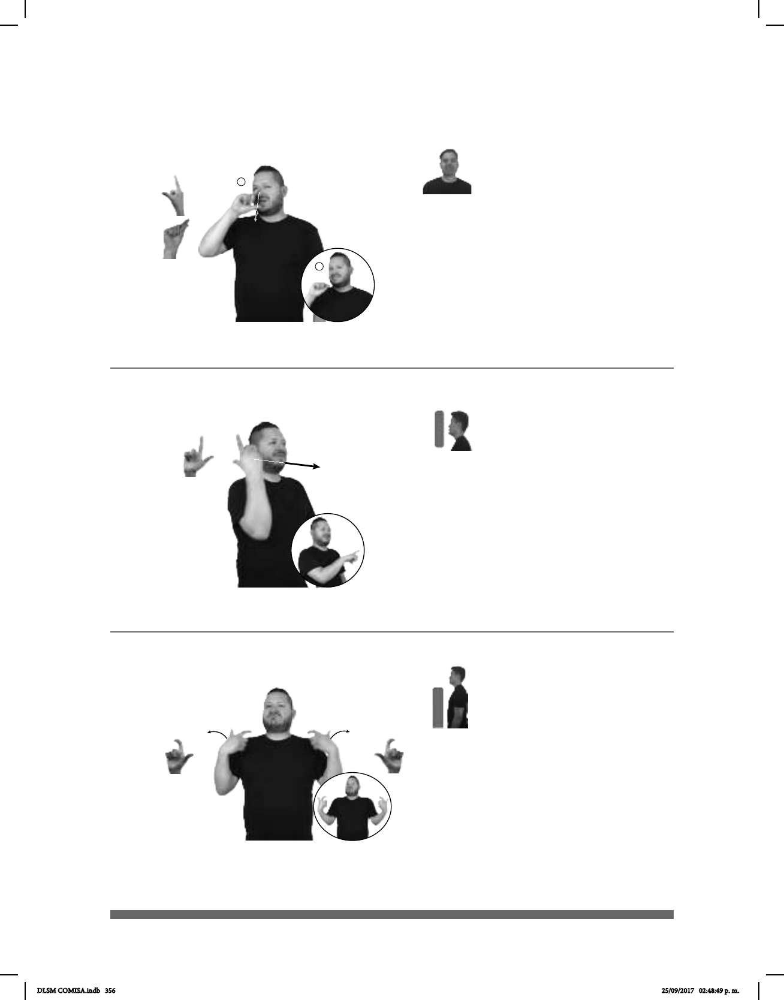

356
1
2
Seña: SM
Seña que pasa de L.12
a Pico. P.12
Palma hacia la izquierda.
De la nariz a la boca.
Recto mientras los dedos
índice y pulgar se tocan.
Boca abierta y
mostrando los dientes.
1. v. intr. Dejar algo de
funcionar parcial o completamente, no
dar el servicio o el resultado esperado
o error.
Seña: SM
L.1
Palma hacia la
izquierda.
A la altura de la cara.
Recto hacia el frente.
Ceño frunci-
do.
adj. Que su
apariencia o características resultan
desagradables a los sentidos o son
consideradas como de mal gusto; que
carece de belleza o de atractivo.
Seña: SS
L.10
Palmas hacia adentro.
A la altura de los
hombros, del centro a los lados.
Las manos parten de
un mismo punto y luego se abren
hacia los lados.
v. tr. Mejorar la fuerza
o el vigor de alguna persona, o la
solidez y la capacidad de alguna
cosa.
(L-47)
(L-46)
1 /
Falla
2
(L-48)
METRO LÍNEA NÚMERO 12 FALLO CONSTRUIR ARREGLAR
La línea 12 del metro tuvo un gran fallo estructural.
CUADERNO
izquierda
FEO
El cuaderno es feo.
pro-ÉL EJERCER++ FORTALECER
Él hace mucho ejercicio para fortalecerse.
DLSM COMISA.indb 356 25/09/2017 02:48:49 p. m.